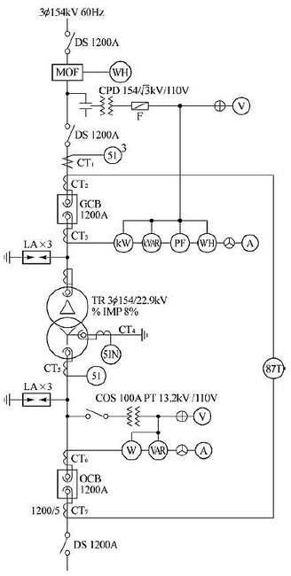
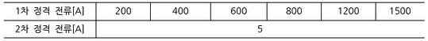
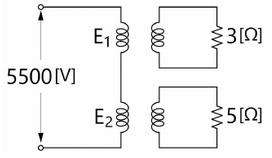
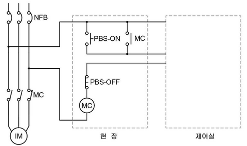
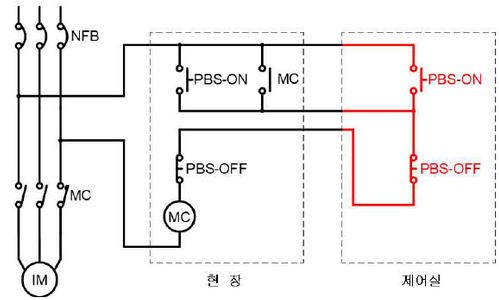
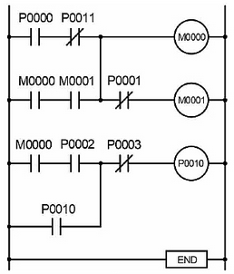
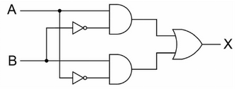
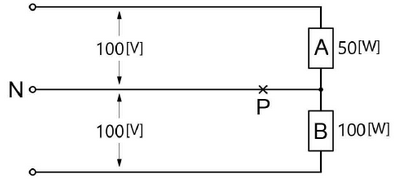

변압기 정격 용량
| 10 | 20 | 30 | 40 | 50 | 75 | 100 |
|---|
계산과정 : \[ P = 51 MW \] \[ 수용률 = 70\% \] \[ 역률 = 90\% \] \[ S = \frac{P}{수용률 \times 역률} = \frac{51}{0.7 \times 0.9} \approx 81.7 MVA \] 표준용량을 고려하여 80MVA 선정
정답 : 80 MVA
정답 : 154 kV
계산과정 : \[ I = \frac{S}{\sqrt{3}V} = \frac{80 \times 10^6}{\sqrt{3} \times 154 \times 10^3} \approx 284 A \] \[ I\_{여유율} = 284 A \times 1.25 = 355 A \] 표에서 가장 가까운 값은 400A 이므로 CT의 비는 400A이다.
\[ 정답 : 400/5 \]
계산과정 :
정답 :
계산과정 :
정답 : (계산 불가능)
계산과정 :
\(CT_7\)의 2차 정격 전류는 5A 이므로, 600A의 1차 전류는 2차에서 \(\frac{5}{600} \times 600 = 5A\) 가 된다.
정답 : 5 A
계산과정: $ = 39.67 $
정답: 40 [MVA] 선정
계산과정: \(\frac{40 \times 10^6}{\sqrt{3} \times 154 \times 10^3} = 149.96 \text{ [A]}\)
여유율을 적용하면 \(149.96 \times 1.25 = 187.45 \text{ [A]}\) 이므로 표에서 200/5 선정
정답: 200/5
계산과정: $ = 1027.8 $
정답: 1027.8 [MVA]
계산과정: \(\frac{9}{5^2} = 0.36 \text{ [Ω]}\)
정답: 0.36 [Ω]
계산과정: \(600 \times \frac{5}{1200} \times \sqrt{3} = 4.33 \text{ [A]}\)
정답: 4.33 [A]
| 점수 | 세부 기준 |
|---|---|
| 12점 | 소문항 6개 계산과정과 정답이 모두 맞으면 12점 획득 |
| 10점 | 소문항 6개 중 5문항의 계산과정과 정답이 모두 맞으면 10점 획득 |
| 8점 | 소문항 6개 중 4문항의 계산과정과 정답이 모두 맞으면 8점 획득 |
| 6점 | 소문항 6개 중 3문항의 계산과정과 정답이 모두 맞으면 6점 획득 |
| 4점 | 소문항 6개 중 2문항의 계산과정과 정답이 모두 맞으면 4점 획득 |
| 2점 | 소문항 6개 중 1문항의 계산과정과 정답이 모두 맞으면 2점 획득 |
| 0점 | 소문항 6개 모두 계산과정과 정답에 오류가 있는 경우 |
① 정격감도전류 :
② 동작시간 :
[2번 해설] 단답 암기형 / 난이도 下
정답① 정격감도전류 : 15[mA] 이하
② 동작시간 : 0.03초 이하
| 점수 | 세부기준 |
|---|---|
| 4점 | 정답 2개 모두 맞으면 4점 획득 |
| 2점 | 정답 2개 중 1개 맞으면 2점 획득 |
| 0점 | 정답 2개 모두 틀리면 0점 |
①
②
③
[3번 해설] 단답 암기형 / 난이도 下
정답| 점수 | 세부기준 |
|---|---|
| 5점 | 정답 3개 모두 맞으면 5점 획득 |
| 3점 | 정답 3개 중 2개 맞으면 3점 획득 |
| 2점 | 정답 3개 중 1개 맞으면 2점 획득 |
| 0점 | 정답 3개 모두 틀리면 0점 |
계산과정 :
총 부하량 = (조명설비 부하용량 + 동력설비 부하용량 + 냉방설비 부하용량) × 연면적 \[ = (20 + 35 + 40) [VA/m²] × 70000 [m²] \] = 95 [VA/m²] × 70000 [m²] = 6650000 [VA] = 6650 [kVA]
정답 : 6650 [kVA]
[4번 해설] 단순 계산형 / 난이도 中 (신출)
정답계산과정: (20 + 35 + 40) \(\times\) 70,000 = 6,650,000 [VA] = 6,650 [kVA]
정답 : 6,650 [kVA]
| 점수 | 세부기준 |
|---|---|
| 4점 | 계산과정과 정답이 모두 맞으면 4점 획득 |
| 0점 | 계산과정과 정답에 오류가 있는 경우 |
| 구분 | 승률 |
|---|---|
| 처음 75[kW]에 대하여 | 100[%] |
| 다음 75[kW]에 대하여 | 85[%] |
| 다음 75[kW]에 대하여 | 75[%] |
| 다음 75[kW]에 대하여 | 65[%] |
| 300[kW] 초과분에 대하여 | 60[%] |
계산과정 :
900 kW 의 계약 최대 전력을 구하기 위해 환산표를 이용합니다.
\[ 처음 75 kW: 75 \times 1.00 = 75 kW \] \[ 다음 75 kW: 75 \times 0.85 = 63.75 kW \] \[ 다음 75 kW: 75 \times 0.75 = 56.25 kW \] \[ 다음 75 kW: 75 \times 0.65 = 48.75 kW \] \[ \* 나머지 (900 - 300) kW: 600 \times 0.60 = 360 kW \]
\[ 총 계약 최대 전력: 75 + 63.75 + 56.25 + 48.75 + 360 = 603.75 kW \]
정답 : 603.75 kW
[5번 해설] 단순 계산형 / 난이도 中
정답계산과정 : 계약전력 = $75 + 75 + 75 + 75 + (900 - 300) = 603.75 [kW] $
정답 : 604 [kW]
| 점수 | 세부기준 |
|---|---|
| 5점 | 계산과정과 정답이 모두 맞으면 5점 획득 |
| 0점 | 계산과정과 정답에 오류가 있는 경우 |
| 약호 | 명칭 |
|---|---|
| OCR | |
| GR | |
| OPR | |
| OVR | |
| PWR |
| 약호 | 명칭 |
|---|---|
| OCR | 과전류 계전기 |
| GR | 지락 계전기 |
| OPR | 결상 계전기 |
| OVR | 과전압 계전기 |
| PWR | 전력 계전기 |
| 점수 | 세부기준 |
|---|---|
| 5점 | 정답 5개 모두 맞으면 5점 획득 |
| 4점 | 정답 5개 중 4개 맞으면 4점 획득 |
| 3점 | 정답 5개 중 3개 맞으면 3점 획득 |
| 2점 | 정답 5개 중 2개 맞으면 2점 획득 |
| 1점 | 정답 5개 중 1개 맞으면 1점 획득 |
| 0점 | 정답 5개 모두 틀리면 0점 |
계산과정 :
\[ 상시 부하 전력 P = 10kW = 10000W \] \[ 표준전압 V = 100V \] \[ 역률 \cos \theta = 1 \]
\[ 부하 전류 I = \frac{P}{V \times \cos \theta} = \frac{10000}{100 \times 1} = 100A \]
정답 : 100A
[7번 해설] 단순 계산형 / 난이도 下
정답계산과정 : $ + = 120[A] $
정답 : 120[A]
| 점수 | 세부기준 |
|---|---|
| 5점 | 계산과정과 정답이 모두 맞으면 5점 획득 |
| 0점 | 계산과정과 정답에 오류가 있는 경우 |

계산과정:
정답:
[8번 해설] 단순 계산형 / 난이도 中 (신출-필기 변형)
정답\[ 계산과정 : E_1 = \frac{3}{3+5} \times 5500 = 2062.5 [V], E_2 = \frac{5}{3+5} \times 5500 = 3437.5 [V] \] \[ 정답 : E_1 : 2062.5 [V], E_2 : 3437.5 [V] \]
| 점수 | 세부기준 |
|---|---|
| 6점 | 2개 모두 계산과정과 정답이 맞으면 6점 획득 |
| 3점 | 2개 중 1개의 계산과정과 정답이 맞으면 3점 획득 |
| 0점 | 2개 모두 계산과정과 정답이 맞지 않는 경우 |
①
②
③
④
⑤
| 점수 | 세부기준 |
|---|---|
| 5점 | 정답 5개 모두 맞으면 5점 획득 |
| 4점 | 정답 5개 중 4개 맞으면 4점 획득 |
| 3점 | 정답 5개 중 3개 맞으면 3점 획득 |
| 2점 | 정답 5개 중 2개 맞으면 2점 획득 |
| 1점 | 정답 5개 중 1개 맞으면 1점 획득 |
| 0점 | 정답 5개 모두 틀리면 0점 |


| 점수 | 세부기준 |
|---|---|
| 5점 | 정답이 맞으면 5점 획득 |
| 0점 | 정답에 오류가 있는 경우 |

| 명령어 | 기능 |
|---|---|
| S | 시작 |
| A | AND |
| O | OR |
| SN | 시작(부정) |
| AN | AND(부정) |
| ON | OR(부정) |
| AS | 그룹간 직렬 |
| OS | 그룹간 병렬 |
| W | 출력 |
| END | 종료 |
[프로그램]
| STEP | 명령어 | 번지 | STEP | 명령어 | 번지 |
|---|---|---|---|---|---|
| 0 | S | P0000 | 7 | W | M0001 |
| 1 | AN | P0011 | 8 | ||
| 2 | ① | ② | 9 | A | P0002 |
| 3 | A | M0001 | 10 | ⑦ | P0010 |
| 4 | ③ | - | 11 | AN | P0003 |
| 5 | ④ | M0000 | 12 | W | P0010 |
| 6 | AN | P0001 | 13 | ⑧ | - |
| ① | ② | ③ | ④ | ⑤ | ⑥ | ⑦ | ⑧ |
|---|---|---|---|---|---|---|---|
| S | M0000 | OS | W | S | M0000 | O | END |
| STEP | 명령어 | 번지 | STEP | 명령어 | 번지 |
|---|---|---|---|---|---|
| 0 | S | P0000 | 7 | W | M0001 |
| 1 | AN | P0011 | 8 | S | M0000 |
| 2 | S | M0000 | 9 | A | P0002 |
| 3 | A | M0001 | 10 | O | P0010 |
| 4 | OS | - | 11 | AN | P0003 |
| 5 | W | M0000 | 12 | W | P0010 |
| 6 | AN | P0001 | 13 | END | - |
| 점수 | 세부기준 |
|---|---|
| 8점 | 소문항 8개 정답이 모두 맞으면 8점 획득 |
| 1~7점 | 소문항 8개 중 1문항당 1점씩 획득 |
| 0점 | 소문항 8개 모두 정답에 오류가 있는 경우 |
| 정격전류의 배수 | 용단시간 | 동작시간 |
|---|---|---|
| 4배 | (1) 초 이내 | - |
| 6.3배 | - | (2) 초 이내 |
| 8배 | 0.5초 이내 | - |
| 10배 | (3) 초 이내 | - |
| 12.5배 | - | 0.5초 이내 |
| 19배 | - | (4) 초 이내 |
[12번 해설] KEC / 난이도 中上(신출)
정답 212.6.3 저압전로 중의 전동기 보호용 과전류보호장치의 시설
| ① | ② | ③ | ④ |
|---|---|---|---|
| 60 | 60 | 0.2 | 0.1 |
| 점수 | 세부기준 |
|---|---|
| 4점 | 소문항 4개 정답이 모두 맞으면 4점 획득 |
| 1~3점 | 소문항 4개 중 1문항당 1점씩 획득 |
| 0점 | 소문항 4개 모두 정답에 오류가 있는 경우 |
계산과정 :
전등효율은 다음과 같이 계산됩니다.
\[ 전등효율 = \frac{광속}{소비전력} = \frac{2000[lm]}{1000[W]} = 2[lm/W] \]
정답 : 2[lm/W]
[13번 해설] 단순 계산형 / 난이도 中 (신출)
정답계산과정 : 전등 효율$ = = = 2[lm/W]$
정답 : 2[lm/W]
| 점수 | 세부기준 |
|---|---|
| 5점 | 계산과정과 정답이 맞으면 5점 획득 |
| 0점 | 계산과정과 정답에 오류가 있는 경우 |

논리회로의 명칭 : XOR(배타적 논리합)
논리식 : \(X = A \oplus B = A\overline{B} + \overline{A}B\)
진리표 :
| A | B | X |
|---|---|---|
| 0 | 0 | 0 |
| 0 | 1 | 1 |
| 1 | 0 | 1 |
| 1 | 1 | 0 |
(2) 논리식: \(X = AB + \overline{A} \overline{B}\)
| A | B | X |
|---|---|---|
| 0 | 0 | 0 |
| 0 | 1 | 1 |
| 1 | 0 | 1 |
| 1 | 1 | 0 |
| 점수 | 세부기준 |
|---|---|
| 6점 | 소문항 3개 중 정답이 모두 맞으면 6점 획득 |
| 4점 | 소문항 3개 중 정답이 2개 맞으면 4점 획득 |
| 2점 | 소문항 3개 중 정답이 1개 맞으면 2점 획득 |
| 0점 | 소문항 3개 중 정답이 모두 틀리면 0점 |
계산과정 :
정답 :
[15번 해설] 단순 계산형 / 난이도 下
정답계산과정 : \(\frac{18 \times 25}{6.12 \times 0.82} \times 1.1 = 98.64 \text{ [kW]}\)
정답 : 98.64 [kW]
| 점수 | 세부기준 |
|---|---|
| 5점 | 정답이 맞으면 5점 획득 |
| 0점 | 정답에 오류가 있는 경우 |
[상주 감시를 하지 아니하는 변전소의 시설]
변전소(이에 준하는 곳으로서 (① 를 초과하는 특고압의 전기를 변성하기 위한 것을 포함한다. 이하 같다)의 운전에 필요한 지식 및 기능을 가진 자(이하 “기술원”이라고 한다)가 그 변전소에 상주하여 감시를 하지 아니하는 변전소는 다음에 따라 시설하는 경우에 한한다.
가. 사용전압은 (② 이하의 변압기를 시설하는 변전소로서 기술원이 수시로 순회하거나 그 변전소를 원격감시제어하는 제어소에서 상시 감시하는 경우
[16번 해설] KEC / 난이도 中 (신출)
정답 KEC 351.9 상주 감시를 하지 아니하는 변전소의 시설
| ① | ② |
|---|---|
| 50 | 170 |
| 점수 | 세부기준 |
|---|---|
| 6점 | 소문항 2개 정답이 모두 맞으면 6점 획득 |
| 3점 | 소문항 2개 중 정답이 1개 맞으면 3점 획득 |
| 0점 | 소문항 2개 정답이 모두 틀리면 0점 |

계산과정 : 단선으로 인해 중성점 전위가 변화합니다. 부하 A와 부하 B의 합성 임피던스를 계산하여 전압강하를 구해야 합니다. 단, 문제에서 부하의 임피던스 정보가 없으므로 정확한 계산은 불가능합니다. 단상 3선식 회로에서 중성선 단선 시, 부하의 전압은 공급전압의 크기와 부하의 임피던스, 그리고 다른 부하의 영향을 받아 변화합니다. 더 자세한 정보가 필요합니다.
정답 : (계산 불가 - 부하 임피던스 정보 부족)
계산과정 : 마찬가지로 부하 B의 전압 또한 중성선 단선의 영향을 받아 변화하며, 부하 A와 B의 임피던스 정보 없이는 정확한 계산이 불가능합니다.
정답 : (계산 불가 - 부하 임피던스 정보 부족)
참고: 문제에서 부하 A와 B의 임피던스(저항) 값이 주어지지 않았으므로, 단순히 100[V]라고 답할 수 없습니다. 중성선 단선은 회로의 전압 분배를 크게 바꿉니다. 부하의 임피던스가 주어진다면, 전압 분배 법칙 (VA = V{총} \(\times \frac{Z*A}{Z_A + Z_B}, V_B = V*{총} \times \frac{Z*B}{Z_A + Z_B}\))을 이용하여 계산할 수 있습니다. 여기서 V*{총}은 선간 전압, \(Z_A\)와 \(Z_B\)는 각 부하의 임피던스입니다. 하지만 현재 정보만으로는 정확한 값을 구할 수 없습니다.
\[ 부하 A의 저항 R_A = \frac{100^2}{50} = 200 [\Omega], 부하 B의 저항 R_B = \frac{100^2}{100} = 100 [\Omega] \]
\[ 부하 A의 단자전압 V_A = \frac{200}{100 + 200} \times 200[V] = 133.33 [V] \]
\[ 부하 B의 단자전압 V_B = \frac{100}{100 + 200} \times 200[V] = 66.67 [V] \]
| 점수 | 세부기준 |
|---|---|
| 5점 | 소문항 2개 중 2문항의 계산과정과 정답이 모두 맞으면 5점 획득 |
| 3점 | 소문항 (1)의 계산과정과 정답이 모두 맞으면 3점 획득 |
| 2점 | 소문항 (2)의 계산과정과 정답이 모두 맞으면 2점 획득 |
| 0점 | 계산과정과 정답에 오류가 있는 경우 |
[18번 해설] 단순 계산형 / 난이도 中
정답 KEC 142.3.2 보호도체
계산과정 : $ = = 31.27 [mm^2] [mm^2] $선정
정답 : 35[mm²] 선정
| 점수 | 세부기준 |
|---|---|
| 5점 | 정답이 맞으면 5점 획득 |
| 0점 | 정답에 오류가 있는 경우 |